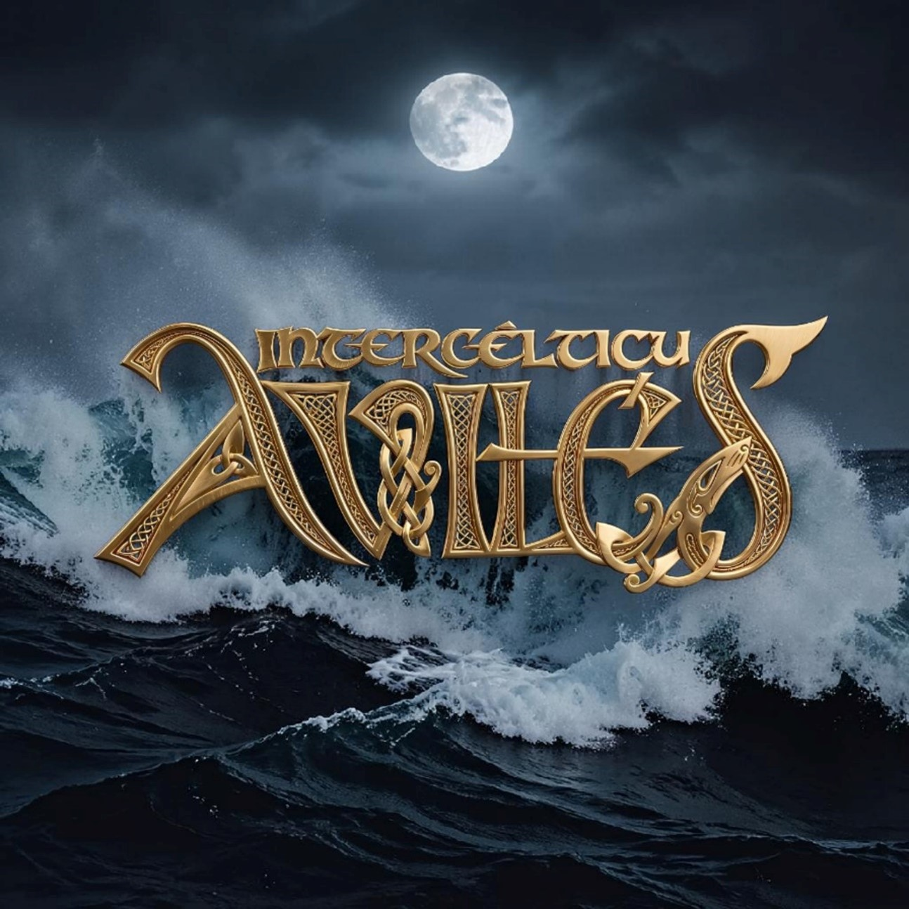
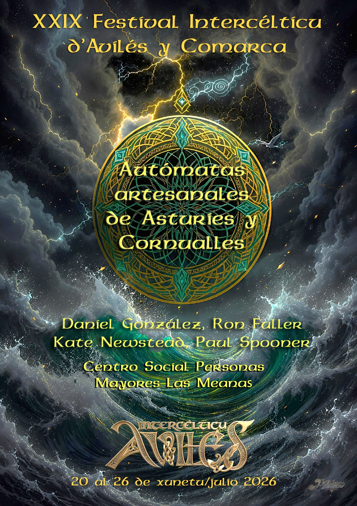

Epílogo
El amanecer no perdona a nadie. Ni siquiera a seis autómatas que anoche incendiaron un escenario celta.
El amanecer comenzó a teñirse de rosa sobre la ría de Avilés. El Festival Intercéltico había terminado, pero la historia de la colección de Daniel González no había hecho más que empezar.
El guardia de seguridad, que aún se preguntaba por qué la gaita sonaba sola a las tres de la mañana, regresó a la sala de exposiciones. Se frotó los ojos, incrédulo. Allí estaban: el Trilero, Berta, la Galleta, el Fool, el esquilador y el pequeño de verde. Todos en sus posiciones originales, inmóviles, como si nunca hubieran abandonado sus vitrinas.
—Debe ser el cansancio —susurró el guardia, dejando su linterna en el suelo—. Necesito vacaciones.
Pero mientras se alejaba por el pasillo, un ruido casi imperceptible resonó en la sala. Un clic-clac metálico.
Berta, la oveja negra, soltó un suspiro de alivio mientras una pequeña mota de lana real, encontrada en el escenario, caía al suelo. La Galleta, desde su posición, le guiñó un ojo.
Ya no eran simples objetos de una colección. Eran leyendas del Intercéltico. Ahora, cada noche, cuando la luna se refleja en la ría y el silencio vuelve al Centro de Mayores, los autómatas ya no planean fugas. Ahora se dedican a ensayar.
Porque, como dice el Trilero cuando cree que nadie escucha:
—La vida es corta, pero una buena melodía... eso sí que dura para siempre.
Y así, la colección de Daniel González pasó de ser piezas inertes a ser el alma secreta de Avilés, esperando siempre, con paciencia mecánica, el momento en que la música vuelva a llamarlos a escena.

XXIX Festival Intercéltico d'Avilés y Comarca

Taller de guionistas
Los autómatas ya han vuelto a su vitrina, pero nadie sabe cuánto durará la calma. ¿Qué plan traman para la próxima noche de festival? Cuéntanoslo con tus propias palabras.
¿No carga el formulario? Ábrelo en una pestaña nueva.